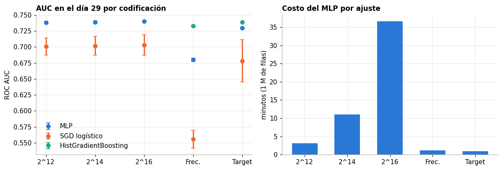
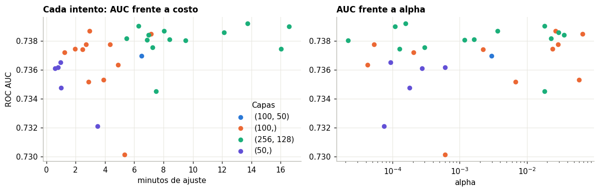
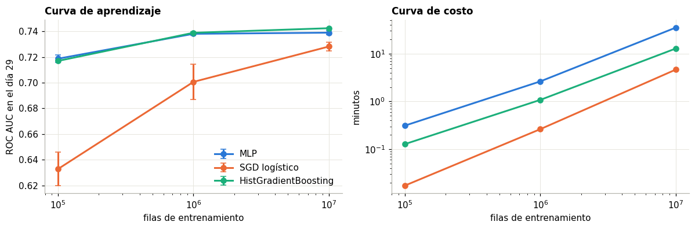

4. Modelado con scikit-learn#
Este capítulo responde P2 (cómo afecta la codificación) y parte de P3 (el MLP frente a líneas base). Todas las cifras son del día 29, validación. La prueba solo aparece en el capítulo 6.
Los ajustes vienen de scripts/03_sk_experiments.py. Corrieron en paralelo, así que los tiempos de este
capítulo sirven para comparar entre sí. Los tiempos limpios están en el capítulo 7.
import sys, json
sys.path.insert(0, "../src")
import numpy as np, pandas as pd, matplotlib.pyplot as plt
from ctr.plots import C, style, es, miles
from ctr.config import RES
from ctr.monitor import read_jsonl
from ctr.metrics import t_ci
style()
pd.set_option("display.max_columns", 30)
R = pd.DataFrame(read_jsonl(RES / "sk" / "runs.jsonl"))
NOM = {"hash12": "Hashing 2^12", "hash14": "Hashing 2^14", "hash16": "Hashing 2^16", "freq": "Frecuencia", "target": "Target OOF"}
MOD = {"mlp": "MLP", "sgd": "SGD logístico", "hgb": "HistGradientBoosting"}
4.1 Factor codificación#
Con 1 millón de filas y 5 semillas se cruzan cinco codificaciones con tres modelos. El MLP usa (100, 50),
alpha=1e-3 y lote de 1024. HistGradientBoostingClassifier no admite matrices dispersas de esta
dimensión, por lo que solo corre con las codificaciones densas.
e = R[R.exp == "enc"]
t = e.groupby(["model", "enc"]).agg(AUC=("v_auc", "mean"), sd=("v_auc", "std"), logloss=("v_logloss", "mean"),
ECE=("v_ece", "mean"), seg=("fit_sec", "mean"), d=("d", "first")).reset_index()
t["Modelo"], t["Codificación"] = t.model.map(MOD), t.enc.map(NOM)
t[["Modelo", "Codificación", "d", "AUC", "sd", "logloss", "ECE", "seg"]].sort_values("AUC", ascending=False).round(4).set_index(["Modelo", "Codificación"])
| d | AUC | sd | logloss | ECE | seg | ||
|---|---|---|---|---|---|---|---|
| Modelo | Codificación | ||||||
| MLP | Hashing 2^16 | 65540 | 0.7400 | 0.0009 | 0.3848 | 0.0184 | 2198.3239 |
| HistGradientBoosting | Target OOF | 27 | 0.7390 | 0.0006 | 0.3839 | 0.0081 | 71.7215 |
| MLP | Hashing 2^14 | 16388 | 0.7390 | 0.0018 | 0.3854 | 0.0168 | 659.8008 |
| Hashing 2^12 | 4100 | 0.7382 | 0.0017 | 0.3855 | 0.0152 | 187.5408 | |
| HistGradientBoosting | Frecuencia | 27 | 0.7330 | 0.0012 | 0.3868 | 0.0107 | 72.5181 |
| MLP | Target OOF | 27 | 0.7299 | 0.0012 | 0.3886 | 0.0156 | 60.4194 |
| SGD logístico | Hashing 2^16 | 65540 | 0.7031 | 0.0160 | 0.4291 | 0.0692 | 15.8261 |
| Hashing 2^14 | 16388 | 0.7018 | 0.0149 | 0.4272 | 0.0649 | 17.0321 | |
| Hashing 2^12 | 4100 | 0.7007 | 0.0136 | 0.4278 | 0.0653 | 16.8386 | |
| MLP | Frecuencia | 27 | 0.6798 | 0.0027 | 0.4109 | 0.0257 | 73.0911 |
| SGD logístico | Target OOF | 27 | 0.6783 | 0.0329 | 0.4405 | 0.0630 | 9.4190 |
| Frecuencia | 27 | 0.5554 | 0.0141 | 0.5092 | 0.1125 | 9.9327 |
fig, ax = plt.subplots(1, 2, figsize=(11, 3.8))
order = ["hash12", "hash14", "hash16", "freq", "target"]
for m, co in [("mlp", C["azul"]), ("sgd", C["naranja"]), ("hgb", C["aqua"])]:
d = t[t.model == m].set_index("enc").reindex(order)
ax[0].errorbar(range(5), d.AUC, yerr=d.sd, fmt="o", color=co, label=MOD[m], capsize=3)
ax[0].set_xticks(range(5), ["2^12", "2^14", "2^16", "Frec.", "Target"]); ax[0].set(title="AUC en el día 29 por codificación", ylabel="ROC AUC")
ax[0].legend()
d = t[t.model == "mlp"].set_index("enc").reindex(order)
ax[1].bar(["2^12", "2^14", "2^16", "Frec.", "Target"], d.seg / 60, color=C["azul"], width=.6)
ax[1].set(title="Costo del MLP por ajuste", ylabel="minutos (1 M de filas)")
plt.tight_layout(); plt.show()

H2 se cumple solo en parte, y en sentido contrario para el MLP. La hipótesis decía que el hashing moderado es comparable a la frecuencia con una fracción de la memoria. La comparación no da empate: en el MLP, el hashing gana con claridad (AUC 0,738 frente a 0,680). La frecuencia colapsa cada categoría a un solo número y borra su identidad. Dos sitios con igual tráfico quedan iguales para la red. Lo que cuesta menos en memoria también informa menos.
Los árboles cuentan otra historia. Con target encoding, HistGradientBoostingClassifier llega a 0,739, al nivel
del MLP con hashing, en una fracción del tiempo. La frecuencia sola no le alcanza (0,733).
El costo de subir la dimensión es muy desigual frente a su ganancia:
Paso |
Ganancia de AUC |
Costo del ajuste |
|---|---|---|
2^12 a 2^14 |
+0,0008 |
3,5 veces |
2^14 a 2^16 |
+0,0010 |
3,3 veces |
Decisión con costo explícito. hash16 tuvo la mayor AUC (0,7400). Se eligió hash12 (0,7382) porque cada ajuste de hash16 tardó 37 minutos con 1 millón de filas, frente a 3 minutos. Con 10 millones y 30 intentos de Optuna no cabía en el tiempo disponible. Se acepta perder 0,0018 de AUC: la decisión es de presupuesto, no estadística.
4.2 Búsqueda bayesiana con Optuna#
30 intentos con TPE sobre hash12 y 1 millón de filas, evaluando cada uno en el día 29. El espacio es el del
enunciado: hidden_layer_sizes, alpha en escala logarítmica, learning_rate_init y batch_size. max_iter queda
controlado por la parada temprana.
tu = R[R.exp == "tune"].copy()
tu["capas"] = tu.params.map(lambda p: str(tuple(p["hidden"])))
tu["lote"] = tu.params.map(lambda p: p["batch"]); tu["lr"] = tu.params.map(lambda p: p["lr"]); tu["alpha"] = tu.params.map(lambda p: p["alpha"])
fig, ax = plt.subplots(1, 2, figsize=(11, 3.6))
for (k, g), co in zip(tu.groupby("capas"), [C["azul"], C["naranja"], C["aqua"], C["violeta"]]):
ax[0].scatter(g.fit_sec / 60, g.v_auc, color=co, label=k, s=28)
ax[1].scatter(g.alpha, g.v_auc, color=co, s=28)
ax[0].set(title="Cada intento: AUC frente a costo", xlabel="minutos de ajuste", ylabel="ROC AUC"); ax[0].legend(title="Capas")
ax[1].set_xscale("log"); ax[1].set(title="AUC frente a alpha", xlabel="alpha")
plt.tight_layout(); plt.show()
tu.sort_values("v_auc", ascending=False).head(6)[["capas", "lote", "lr", "alpha", "v_auc", "v_logloss", "fit_sec", "iters"]].round(4).reset_index(drop=True)

| capas | lote | lr | alpha | v_auc | v_logloss | fit_sec | iters | |
|---|---|---|---|---|---|---|---|---|
| 0 | (256, 128) | 512 | 0.0034 | 0.0002 | 0.7392 | 0.3850 | 824.5350 | 6 |
| 1 | (256, 128) | 2048 | 0.0002 | 0.0184 | 0.7391 | 0.3859 | 376.6666 | 7 |
| 2 | (256, 128) | 512 | 0.0021 | 0.0001 | 0.7390 | 0.3845 | 994.7527 | 6 |
| 3 | (256, 128) | 1024 | 0.0004 | 0.0037 | 0.7387 | 0.3851 | 481.9778 | 6 |
| 4 | (100,) | 2048 | 0.0002 | 0.0266 | 0.7387 | 0.3846 | 177.6886 | 13 |
| 5 | (256, 128) | 1024 | 0.0004 | 0.0294 | 0.7386 | 0.3854 | 727.5013 | 6 |
Las mejores pruebas están empatadas dentro del ruido: la desviación entre semillas ronda 0,0017, y las cinco primeras caben en 0,0005. Elegir la primera sería perseguir ruido, y además costaría 2,3 horas por ajuste con 10 millones de filas.
Por eso se aplica una regla de parsimonia: la red más simple a menos de una desviación de la mejor. Queda
(100,), lote 2048, alpha≈0,027 y tasa ≈0,0002, con AUC 0,7387 en 3 minutos.
4.3 Curvas de aprendizaje#
Mismos hiperparámetros con 100 mil, 1 millón y 10 millones de filas, 5 semillas. Las líneas base son SGD con hash12 y HGB con target encoding, las mejores de cada modelo.
s = R[R.exp == "scale"]
g = s.groupby(["model", "n"]).agg(AUC=("v_auc", "mean"), sd=("v_auc", "std"), ll=("v_logloss", "mean"), ECE=("v_ece", "mean"), seg=("fit_sec", "mean"), gb=("gb", "mean")).reset_index()
fig, ax = plt.subplots(1, 2, figsize=(11, 3.7))
for m, co in [("mlp", C["azul"]), ("sgd", C["naranja"]), ("hgb", C["aqua"])]:
d = g[g.model == m]
ax[0].errorbar(d.n, d.AUC, yerr=d.sd, marker="o", color=co, label=MOD[m], capsize=3)
ax[1].plot(d.n, d.seg / 60, marker="o", color=co, label=MOD[m])
ax[0].set_xscale("log"); ax[0].set(title="Curva de aprendizaje", xlabel="filas de entrenamiento", ylabel="ROC AUC en el día 29"); ax[0].legend()
ax[1].set_xscale("log"); ax[1].set_yscale("log"); ax[1].set(title="Curva de costo", xlabel="filas de entrenamiento", ylabel="minutos")
plt.tight_layout(); plt.show()
g.assign(Modelo=g.model.map(MOD))[["Modelo", "n", "AUC", "sd", "ll", "ECE", "seg"]].round(4).set_index(["Modelo", "n"])

| AUC | sd | ll | ECE | seg | ||
|---|---|---|---|---|---|---|
| Modelo | n | |||||
| HistGradientBoosting | 100000 | 0.7170 | 0.0000 | 0.3939 | 0.0127 | 7.7095 |
| 1000000 | 0.7390 | 0.0006 | 0.3839 | 0.0081 | 64.7136 | |
| 10000000 | 0.7425 | 0.0004 | 0.3822 | 0.0132 | 765.2784 | |
| MLP | 100000 | 0.7187 | 0.0030 | 0.3923 | 0.0079 | 18.7678 |
| 1000000 | 0.7381 | 0.0010 | 0.3850 | 0.0122 | 157.5663 | |
| 10000000 | 0.7390 | 0.0017 | 0.3877 | 0.0313 | 2093.8492 | |
| SGD logístico | 100000 | 0.6328 | 0.0129 | 1.6101 | 0.2109 | 1.0469 |
| 1000000 | 0.7007 | 0.0136 | 0.4278 | 0.0653 | 15.8116 | |
| 10000000 | 0.7282 | 0.0033 | 0.3897 | 0.0120 | 277.3122 |
El MLP deja de aprender temprano. Entre 100 mil y 1 millón de filas gana 0,019 de AUC (0,719 a 0,738). Entre 1 y 10 millones gana 0,001 (0,738 a 0,739), menos que la desviación entre semillas, y su calibración empeora (ECE de 0,012 a 0,031). HGB con target encoding sigue mejorando hasta 0,7425, y es el mejor modelo de scikit-learn con 10 millones. SGD es el que más gana con datos (0,701 a 0,728): un modelo lineal sobre hashing necesita volumen para estimar 4.100 pesos.
Dos causas probables del estancamiento: la parada temprana por exactitud corta entre las épocas 10 y 13, y alpha≈0,027
viene de buscar con 1 millón. Con más datos convendría menos regularización. Es una limitación del protocolo, que fijó los
hiperparámetros a un tamaño y los trasladó a otro.
4.4 Ablaciones#
Cada ablación cambia una sola pieza respecto al modelo elegido: 1 millón de filas, 5 semillas.
ref = s[(s.model == "mlp") & (s.n < 1100000) & (s.n > 900000)]
ab = R[R.exp.isin(["abl", "abl_depth", "abl_pos"])].copy()
filas = [("Modelo elegido", ref.v_auc, ref.v_logloss, ref.v_f1)]
for tag, nom in [("cruces", "Con cruces site_id x device_type y app_id x device_type"), ("sin_ids", "Sin device_ip ni device_id")]:
d = ab[(ab.exp == "abl") & (ab.tag == tag)]
filas.append((nom, d.v_auc, d.v_logloss, d.v_f1))
for tag in sorted(ab[ab.exp == "abl_depth"].tag.unique(), key=lambda x: (x.count("x"), x)):
d = ab[ab.tag == tag]
filas.append(("Capas " + tag[1:].replace("x", ", "), d.v_auc, d.v_logloss, d.v_f1))
T = pd.DataFrame([dict(Variante=f[0], AUC=f[1].mean(), sd=f[1].std(), logloss=f[2].mean(), F1=f[3].mean()) for f in filas]).round(4).set_index("Variante")
T
| AUC | sd | logloss | F1 | |
|---|---|---|---|---|
| Variante | ||||
| Modelo elegido | 0.7381 | 0.0010 | 0.3850 | 0.3980 |
| Con cruces site_id x device_type y app_id x device_type | 0.7408 | 0.0003 | 0.3838 | 0.4004 |
| Sin device_ip ni device_id | 0.7396 | 0.0008 | 0.3845 | 0.3982 |
| Capas 100 | 0.7381 | 0.0010 | 0.3850 | 0.3980 |
| Capas 50 | 0.7363 | 0.0011 | 0.3857 | 0.3958 |
| Capas 100, 50 | 0.7383 | 0.0011 | 0.3851 | 0.3976 |
| Capas 256, 128 | 0.7376 | 0.0009 | 0.3859 | 0.3969 |
| Capas 128, 64, 32 | 0.7360 | 0.0011 | 0.3858 | 0.3951 |
sin = s[(s.n > 900000) & (s.n < 1100000)].set_index("seed")
filas = []
for m in ("mlp", "sgd", "hgb"):
a = s[(s.n > 900000) & (s.n < 1100000) & (s.model == m)]
b = ab[(ab.exp == "abl_pos") & (ab.model == m)]
filas.append(dict(Modelo=MOD[m], **{"AUC sin pesos": a.v_auc.mean(), "AUC con pesos": b.v_auc.mean(), "log loss sin pesos": a.v_logloss.mean(),
"log loss con pesos": b.v_logloss.mean(), "ECE sin pesos": a.v_ece.mean(), "ECE con pesos": b.v_ece.mean(),
"F1 sin pesos": a.v_f1.mean(), "F1 con pesos": b.v_f1.mean()}))
pd.DataFrame(filas).round(4).set_index("Modelo")
| AUC sin pesos | AUC con pesos | log loss sin pesos | log loss con pesos | ECE sin pesos | ECE con pesos | F1 sin pesos | F1 con pesos | |
|---|---|---|---|---|---|---|---|---|
| Modelo | ||||||||
| MLP | 0.7381 | 0.7133 | 0.3850 | 0.6070 | 0.0122 | 0.2531 | 0.3980 | 0.3751 |
| SGD logístico | 0.7007 | 0.6876 | 0.4278 | 0.7012 | 0.0653 | 0.2579 | 0.3623 | 0.3525 |
| HistGradientBoosting | 0.7390 | 0.7389 | 0.3839 | 0.5773 | 0.0081 | 0.2643 | 0.3970 | 0.3958 |
Cruces: la mejora más clara. site_id x device_type y app_id x device_type suben el AUC de 0,7381 a 0,7408, con menor
desviación. El MLP, con una sola capa oculta, no arma solo todas las interacciones relevantes. Dárselas hechas ayuda, y en el
mismo espacio de 2^12.
Quitar device_ip y device_id no empeora: mejora un poco (0,7396). Es coherente con el EDA: el 45 % de las filas de prueba
trae una IP nunca vista. Lo aprendido de esas variables no se traslada al día siguiente y ocupa capacidad con colisiones. Lo
mismo apuntaba el capítulo 8 con la actividad de IP nuevas.
Profundidad: no importa en este rango. Entre (50,) y (256, 128) las diferencias no pasan de 0,002, del orden del ruido.
La red más profunda, (128, 64, 32), es de las peores.
Ponderar clases empeora todo, aunque el umbral se elija igual. En el MLP, repetir positivos baja el AUC de 0,738 a 0,713 y multiplica el ECE por 20 (0,012 a 0,253): el modelo aprende una tasa base del 50 % que no existe. El F1 también cae, porque el umbral elegido en validación ya compensaba el desbalance. HGB casi no cambia en discriminación, pero se descalibra igual. En CTR, donde la probabilidad se usa para pujar, ponderar es mala idea si no se recalibra después.
No se combinaron las mejoras (cruces sin identificadores) para el modelo final: la ablación cambia una pieza a la vez y la configuración final quedó fijada antes. Queda como mejora directa.